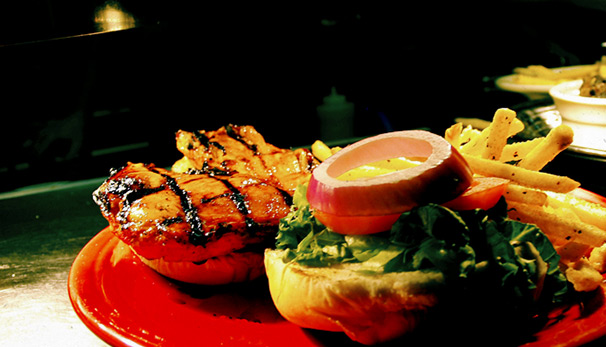

- 
Beers
draft beers
Blue Moon Brewed with malted barley, white wheat and oats. It features a crisp wheat finish and the perfect combination of orange peel and coriander. ABV: 5.4%. 3.50 Brooklyn Brown Ale A blend of six malts, some of them roasted, give this beer its deep russet-brown color and complex malt flavor, fruity, smooth and rich, with a caramel, chocolate and coffee background. Generous late hopping brings forward a nice hop aroma to complete the picture. ABV: 5.6%, IBU: 30. 4.25 Brooklyn Lager Brooklyn Lager is a Vienna style lager that is amber-gold in color and displays a firm malt center supported by a refreshing bitterness and floral hop aroma. Caramel malts show in the finish. The aromatic qualities of the beer are enhanced by a "dry-hopping," the centuries-old practice of steeping the beer with fresh hops as it undergoes a long, cold maturation. ABV: 5.2%, IBU: 32. 4.25 Carolina Blonde Two row barley, a hint of wheat and noble hops make up this American Cream Ale. Clean refreshing flavor and a rich golden color. Brewed in North Carolina by Foothills Brewing Co. ABV: 3.8%, IBU: 12, SRM: 3. 3.50 Catawba Fire Water This golden straw colored IPA is made with 5 varieties of malts and 6 massive hop additions. It is outstanding in flavor and aromatics. ABV: 5.2%. 4.25 Endo IPA An American IPA with floral, hoppy notes. Made 100% malted barley and copious amounts of Cascade, Magnum and Chinook hops. Brewed in North Carolina by Foothills Brewing Co. ABV: 6%, IBU: 66, SRM: 7.5. 4.25 Foothills Hoppyum IPA Full of citrusy American hops, with an emphasis on Simcoe hops, an especially pungent hop variety. This brew finishes dry, making it a great session beer to come back to. ABV: 6.2%, IBU: 70, SRM: 8. 4.25 Foothills People's Porter An English-style robust porter. Dark brown in color with a ruby hue, chocolate and sweet toffee aroma. Firm unsweetened chocolate flavor with moderate notes of caramel and toffee, an herbal hop bitterness up front and a slight note of espresso in the finish. ABV: 5.8%, IBU: 42, SRM: 30.7. 4.25 Guinness An Irish Dry Stout. The perceived smoothness of draught Guinness is due to its low level of carbon dioxide and the creaminess of the head caused by the very fine bubbles that arise from the use of nitrogen. A distinctive feature is the burnt flavor which is derived from the use of roasted unmalted barley. ABV: 4.1%. 6.00 Highland Gaelic Ale A deep amber colored American Ale, featuring a rich malty body. Cascade and Williamette hops add a complex hop flavor and aroma. This ale is exceptionally balanced between malty sweetness and delicate hop bitterness. ABV: 5.6%, IBU: 30. 4.25 Highland Little Hump Spring Ale This American Pale Ale is meticulously handcrafted for full floral hop aroma and flavor. Brewed with grains from America's heartland - Simcoe for bittering, Amarillo and Cascade (both dry hopped) for aromatics - this beer finishes crisp and clean. ABV: 4.5%, IBU: 32. 4.25 Highland Oatmeal Porter This robust beer is black in color, very malty with hints of chocolate-roasted flavor and a well-balanced hop character. Hops used: Chinook, Williamette and Cascade. ABV: 5.9%, IBU: 35. 4.25 Lazy Magnolia Southern Pecan Made with whole roasted pecans. The pecans are used just like grain and provide a nutty characteristic and a delightful depth to the flavor profile. This beer is very lightly hopped to allow the malty, caramel, and nutty flavors shine through. The color is dark mahogany. ABV: 4.39%, SRM: 15. 4.00 Magic Hat #9 A dry, crisp, refreshing not-quite pale ale with apricot flavors. ABV: 5.1%, IBU: 20, SRM: 9.0. 4.25 Marble City Dad's Dime Amber A smooth amber ale with Pacific Northwest hops and pine-citrus notes. 4.25 Marble City Irish Red This Irish red has an aroma of malt with caramel-like flavor and sweetness. Finishes with a light taste of roasted grain, which lends a characteristic dryness to the finish and medium-low hop bitterness. Marble City Rox Stout A light bodied stout that us brewed with roasted oats providing a smooth roasted finish in the mouth. 4.25 New Belgium 1554 This Belgian Black Ale tastes of chocolate and roasted malt with a caramel sweetness. ABV: 5.6%, IBU: 21. 4.25 New Belgium Dig A Pale Ale brewed with Sorachi hops that provide a fresh spring zing with incredible lemon aroma. Nelson Sauvin hops provide bursts of passion fruit, mango and peach. Cascade and Centennial hops round out this crisp, clean Pale Ale. ABV: 5.6%, IBU: 36. 4.25 New Belgium Fat Tire This Belgian style amber has biscuit-like malt flavors with light hoppy freshness. ABV: 5.2%, IBU: 18.5. 4.25 New Belgium Ranger IPA This clear amber beauty bursts at the starting gate with an abundance of hops; Cascade (citrus), Chinook (floral/citrus), and Simcoe (fruity) lead off the beer, with Cascade added again for an intense dry hop flavor. Brewed with pale and dark caramel malts that harmonize the hop flavor from start to finish. ABV: 6.5%, IBU: 70. 5.00 Sierra Nevada Torpedo Torpedo is a big AMerican IPA: bold, assertive, and full of flavor highlighting the complex citrus, pine and herbal character of whole-cone American hops (Magnum, Crystal & Citra). ABV: 7.2%, IBU: 65. 5.00 Sweetwater 15 Barley wine that was brewed for Sweetwater's 15th anniversary. The aroma delivers a solid malty sweetness, caramel, hints of orange, light grassy hops and a touch of alcohol. The taste starts off with caramel malts and a touch of toffee moving into a solid piney and citrusy hop presence that lingers with alcohol showing up in the finish. ABV: 10%, IBU: 70. 5.00 (9 oz.) Sweetwater 420 A tasty West Coast Style Pale Ale wit a stimulating hop character and a crisp finish. ABV: 5.4%. 4.25 Sweetwater Blue Sweetwater Blue is a unique light-bodied ale with a hint of fresh blueberries. It begins with an appealing blueberry aroma and finishes as a surprisingly thirst-quenching ale. ABV: 4.9%. 4.25 Sweetwater Road Trip A fiery Pilsner fermented at ale temperatures for a fuller flavor, capped by and intense spicy-hop finish. ABV: 5.2%. 4.25 Woodchuck Apple Cider Amber in color and is sweet (but not too sweet) with a nice golden color with a nice crisp finish. ABV: 5%. 4.25 Yazoo Hefeweizen An authentic example of a Bavarian Hefeweizen. "Hefe" means cloudy or yeasty and "weizen" means wheat. This beer is made with mostly wheat and uses a true Hefeweizen yeast that gives it a fruity, banana aroma with just a hint of cloves. The tart finish makes this the perfect summer beer. ABV: 5%, IBU: 13, SRM: 3. 4.25 Yuengling Lager Rich amber color and medium-bodied flavor with roasted caramel malt for a subtle sweetness and a combination of Cluster and Cascade hops. ABV: 4.4%. 3.00
bottle beers
amstel light 3.50
arrogant bastard ale 7.00
becks non-alcoholic 3.50
bud light 3.00
budweiser 3.00
coors light 3.00
corona 3.50
corsendonk brown ale 7.00
corsendonk pale ale 7.00
delirium tremens 8.00
grolsch (16 oz.) 4.50
heineken 3.50
high life 2.00
michelob ultra 3.00
miller light 3.00
pabst blue ribbon (16 oz.) 2.50
pilsner urquell 4.00
red stripe 3.50
sam adams cherry wheat 3.50
stella artois 3.50